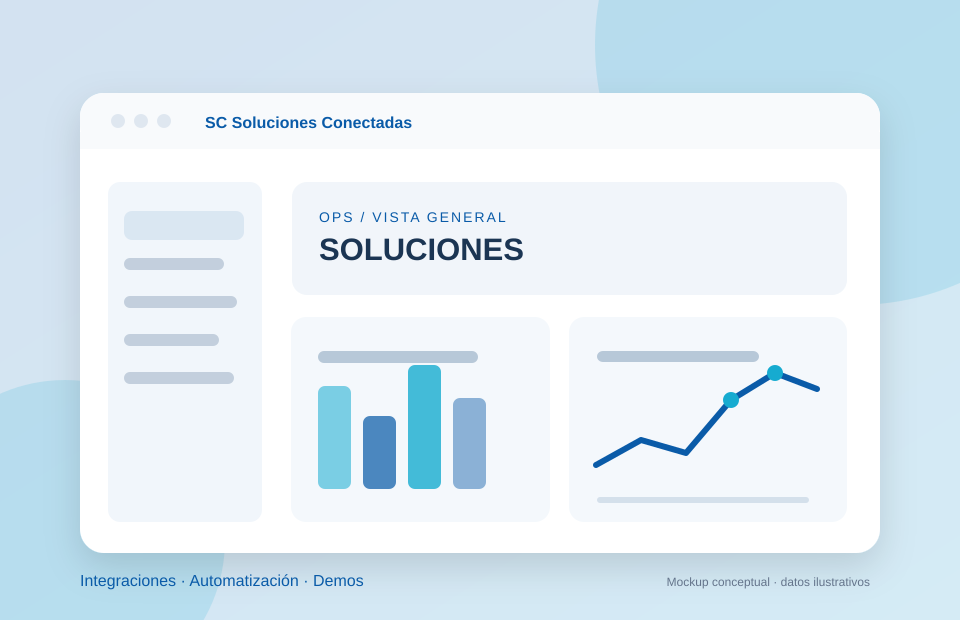
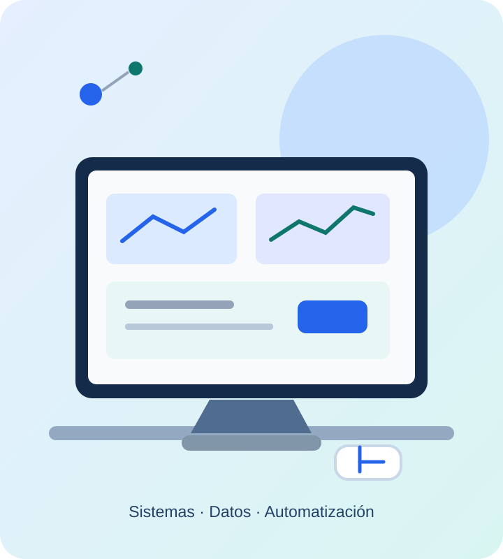

Sistemas · Automatización · Software
Maikol Andrés Betancourt
Transformo procesos y necesidades en soluciones digitales funcionales.
Integro sistemas empresariales, automatización industrial, bases de datos e inteligencia artificial. Mi enfoque combina experiencia técnica, análisis de procesos y diseño centrado en las personas.
MAPA DE SOLUCIONES● Integradas
Automatización
Inteligencia aplicada
En números
Una trayectoria en evolución
Indicadores verificables de mi experiencia y formación, sin cifras comerciales estimadas.
Habilidades
Tecnología aplicada a problemas reales
Mi perfil combina sistemas de información, automatización industrial y herramientas de desarrollo y análisis.
Software e integraciones
Construcción de herramientas de gestión y conexión entre sistemas para evitar tareas manuales y datos aislados.
Odoo ERPn8nAPIs RESTWebhooksPythonSQL ServerPostgreSQL
Automatización industrial
Supervisión, control, interfaces operativas y conectividad de procesos y dispositivos industriales.
SCADAHMIAVEVA InTouchPLC SiemensBraumatNode-REDIoT
Datos e inteligencia artificial
Consultas, visualización de indicadores y automatizaciones asistidas por IA para apoyar decisiones.
ExcelTableauPower BIGrafanaSQLAgentes IA
Infraestructura y experiencia web
Administración de redes, servicios y servidores; diseño y desarrollo de interfaces responsive.
MikroTikUbiquitiVPNHTMLCSSJavaScriptFigma
Trabajo seleccionado
Proyectos y casos de estudio
Aplicaciones profesionales y desarrollos académicos. Se diferencia lo publicado de los sistemas internos o en construcción.

Profesional2026
SC Soluciones Conectadas
Servicios, demostraciones navegables e integraciones orientadas a digitalizar operaciones empresariales.
Aprendizaje: traducir problemas comerciales en experiencias digitales claras y demos funcionales.
HTML/CSS/JSAutomatizaciónUXDemos B2B

Profesional · privado2026
ERP para Agrimensura
Sistema web para centralizar prospectos, presupuestos, proyectos, trámites y seguimiento operativo de un estudio.
Resultado: un flujo digital integrado para actividades que antes estaban distribuidas entre herramientas.
SQL Servern8nTelegramAPIs
Ver caso profesional Código no público

Profesional · en desarrollo2026
CRM Comercial
Gestión de prospectos, contactos, interacciones, tareas y propuestas comerciales para equipos de SC y Click.
Aprendizaje: diseñar flujos de seguimiento con permisos, persistencia y analítica integrada.
SupabasePostgreSQLChart.jsRLS

Académico · UX/UI2026
Cubrí Seguros
Experiencia responsive para cotizar un seguro, comparar planes, completar datos y simular la contratación.
Aprendizaje: mejorar jerarquías visuales, validaciones y estados del flujo de pago.
UX/UIHTMLCSSJavaScript

Académico · frontend2026
Coffea
Landing responsive de cafetería desarrollada con HTML5 y CSS3, componentes reutilizables y media queries.
Aprendizaje: maquetar una composición visual completa manteniendo comportamiento responsive.
HTML5CSS GridFlexboxScroll Snap
Trayectoria
Experiencia profesional
Una mirada resumida a mi recorrido laboral y a las áreas donde desarrollé soluciones técnicas.
2026 — Actualidad
SC Soluciones Conectadas
Emprendimiento propioConsultoría y desarrollo de soluciones digitales para gestión, automatización y conectividad empresarial.
- Diseño de procesos y herramientas para digitalizar el trabajo de organizaciones.
- Desarrollo de aplicaciones e integraciones con ERP, APIs, n8n y bases de datos.
Nov. 2022 — Sep. 2026
Intellymation SRL
Sistemas y automatizaciónExperiencia multidisciplinaria en automatización industrial, infraestructura de redes y sistemas empresariales.
- Desarrollo e integración de interfaces HMI/SCADA, PLC y monitoreo de procesos.
- Implementación de Odoo, automatizaciones en n8n, reportería y soporte de redes e infraestructura.
2022
Apart Hotel Bonato
AdministraciónExperiencia operativa y de atención al público en hotelería.
- Coordinación de reservas y atención de consultas de huéspedes.
- Gestión de caja, cobros, facturación y registros administrativos.
2018 — 2020
Hidrovital y Waysport
Operaciones, logística y comunicaciónRoles iniciales que fortalecieron la organización, el contacto con clientes y el trabajo interdisciplinario.
- Coordinación de pedidos, logística e inventarios.
- Diseño gráfico y gestión de requerimientos comerciales.
Formación continua
Carreras, cursos y certificaciones
La formación técnica acompaña mis proyectos. Los cursos y constancias se identifican según su tipo; no se presentan asistencias como títulos profesionales.
Lic. en Automatización y Control de Procesos Industriales
FCyT — Universidad Autónoma de Entre Ríos (UADER)
Desde 2019Lic. en Sistemas de Información
FCyT — Universidad Autónoma de Entre Ríos (UADER)
Desde 2022Técnico Electricista
Orientación a Electrónica Industrial · EET N.º 2 Francisco Ramírez
Formación técnica de baseCertificaciones y capacitaciones
Selección individual y agrupación de módulos técnicos. Las credenciales privadas no se descargan de forma pública.
43 credenciales y constancias documentadas
Data Analytics
Coderhouse · 2026
Curso completado y aprobado · 46 hDocumento disponible a solicitudTableau
Coderhouse · 2025
Curso completado y aprobado · 12 hDocumento disponible a solicitudExcel
Coderhouse · 2025
Curso completado y aprobado · 20 hDocumento disponible a solicitudAutomatización
Fundación YPF · 2026
Curso finalizado y aprobado · 16 hDocumento disponible a solicitudSistema de Control Braumat 7.1
Intellymation SRL · 2023
Capacitación completadaDocumento disponible a solicitudGovernance, Risk, Compliance, and Data Privacy
IBM SkillsBuild · 2026
Insignia digitalVer credencial ↗Inmersión Inteligencia Artificial en la Práctica
DAXUS LATAM · 2026
Certificado de participación · 8 hDocumento disponible a solicitudSalud y Seguridad en el trabajo
Fundación YPF · 2026
Curso finalizado y aprobado · 16 hDocumento disponible a solicitudEnterprise Console «Skelta»
Intellymation SRL · 2024
Entrenamiento básicoDocumento disponible a solicitudSiemens Braumat Route Control System
Intellymation SRL · 2024
Capacitación completadaDocumento disponible a solicitudSensores de posición: sentidos de las máquinas
ifm Academy · 2026
Constancia de asistencia a webinarDocumento disponible a solicitudAVEVA · 29 módulos de InTouch HMI, Machine Edition y Edge
AVEVA · 2023
Certificados individuales de finalización de microcursosConsultar los 29 módulos
- InTouch Machine Edition – 03 Product Overview Rev B
- InTouch HMI 2017: Tag Utilities
- AVEVA™ Edge Introduction
- InTouch HMI 2017: Network Application Distribution
- InTouch Machine Edition – 09 Formatting and Shapes Rev B
- InTouch HMI 2017: Symbols with Element Styles
- InTouch Machine Edition – 11 Animation Overview Rev B
- InTouch Machine Edition – 10 Active Objects Part 1 Rev B
- InTouch Machine Edition – 08 Screen Groups Rev B
- InTouch HMI 2017: Symbol Construction
- InTouch Machine Edition – 07 Drivers Part 1 Rev B
- InTouch HMI 2017: Tag Creation and Configuration
- InTouch HMI 2017: Tags Linked to External Data
- InTouch HMI 2017: Application Backup and Restore
- InTouch Machine Edition – 01 Preparation Rev B
- InTouch HMI 2017: Security Configuration Using OS Security Type
- InTouch HMI 2017: Application Publishing
- InTouch Machine Edition – 10 Active Objects Part 2 Rev B
- InTouch Machine Edition – 12 Animation Details Rev B
- InTouch Machine Edition – 10 Active Objects Part 3 Rev B
- InTouch HMI 2017: Introduction to the Modern InTouch Application
- InTouch Machine Edition – 06 Tags Rev B
- InTouch Machine Edition – 05 User Interface Overview Rev B
- InTouch HMI 2017: InTouch Window Layout and Basic Navigation
- InTouch Machine Edition – 07 Drivers Part 2 Rev B
- InTouch HMI 2017: Symbols with Situational Awareness
- InTouch HMI Web Client 2017
- InTouch HMI 2017: Tag Testing and Diagnosing with Tag Viewer
- InTouch HMI 2017: Application Lockdown
Un poco más
Tecnología con sentido práctico
Me interesa entender primero cómo trabaja una organización y después elegir las herramientas que realmente resuelvan sus necesidades. Esa mirada surge de combinar sistemas de información, automatización industrial y experiencia operativa.
Trabajo con curiosidad técnica y una perspectiva integral: desde una red o un PLC hasta una interfaz, una integración de ERP o un tablero de indicadores. Hoy también aplico principios de diseño UX/UI para que las soluciones sean más claras y fáciles de usar.
Claridad
Soluciones que se puedan explicar, usar y mantener.
Mejora continua
Medir, aprender, corregir y volver a iterar.
Colaboración
Escuchar a usuarios, clientes y equipos técnicos.

Contacto
¿Tenés un proyecto o una oportunidad para conversar?
Podemos hablar sobre sistemas, automatización, integraciones, datos o desarrollo de software.